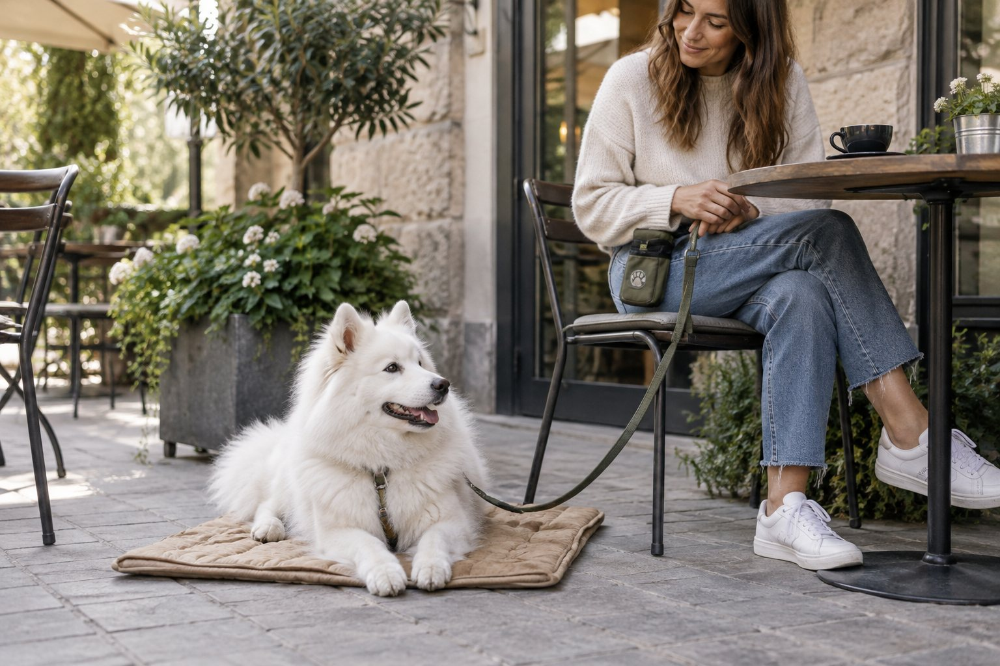

Reward your dog for choosing the mat, then for resting there briefly. Build duration and distractions separately, use a clear release cue, and never use the mat as a punishment spot.
A settle mat is not a remote-control button for a dog who is already overwhelmed. It is a familiar place built through many easy repetitions. Start in a quiet room where your dog can succeed, teach that calm contact with the mat pays, and carry that skill slowly into the moments when you would actually like your dog to rest.
Choose the mat and set up an easy first session
Pick a washable mat large enough for your dog to lie comfortably and distinct from everyday flooring. It need not be expensive. A thin portable blanket may work for a relaxed dog, while a senior dog may need more cushioning and stable traction. Place it on a nonslip floor in a quiet room. Prepare small rewards your dog can eat easily, and decide where you will stand or sit. Keep the first session to a few minutes so the mat remains a pleasant opportunity rather than a prolonged demand.
Let the dog notice the mat. Mark and reward a glance, sniff, or step toward it. Place the reward on the mat so returning there makes sense. Do not drag the dog onto it or hold the dog down. When the dog offers one paw, then two, then all four, reward each stage. You can add a cue such as “mat” after the behavior starts happening reliably; a cue is clearer when the dog already knows the action it predicts.
Watch your dog’s mood. A wagging, curious dog may be ready for a few more repetitions. A dog who snatches treats, paces, or repeatedly leaves may need an easier session, more distance from household noise, or a break. Training should not prevent access to water, a normal resting place, or needed movement. If your dog is unable to settle anywhere, is in pain, or seems unusually restless, discuss that change with a veterinarian.
The mat is a location cue, not a command to feel relaxed. At first you reward arriving there. Later you reward softer body language and a voluntary down. Do not insist that every dog lie in the same exact posture. A dog may choose to curl, stretch, or sit before resting. Comfort and choice make the behavior more useful than a rigid pose maintained under pressure.
Build duration before adding distractions
Once your dog goes to the mat willingly, wait a breath before rewarding. Gradually extend the quiet time between rewards. Deliver the reward low and calmly so it does not invite the dog to spring up. If the dog leaves, reset without scolding. You asked for too much duration, or the environment became too difficult. Shorten the next repetition. A dog who can rest for ten seconds comfortably is ready for practice; a dog forced to stay for ten minutes is not.
Introduce a release word such as “free” and toss a treat away from the mat after a successful short stay. This tells the dog when the exercise ends and gives a chance to choose to return. Practice a few cycles of mat, rest, release. Do not call the dog back immediately every time; allow a brief normal break. The dog should learn that the mat predicts a predictable opportunity to settle, not a trap that prevents leaving.
Add one modest distraction at a time after a quiet-room baseline is strong. Stand up, take a step, sit down again, or open a cupboard. Reward if the dog remains comfortable. Increase difficulty only when the previous version is easy. A visitor at the door, a cooking meal, or a busy cafe combines many distractions; those are late-stage goals. If the dog becomes alert or barks, lower the challenge rather than repeating the cue louder.
Be clear about what you are reinforcing. If you always reward immediately after barking, the dog may not understand that quiet resting is the target. Pause, wait for a small relaxed moment, and reward that. Use food, gentle praise, or a safe chew according to your dog’s needs. A chew can support a longer calm period, but supervise it and consider its calories. Training rewards should be part of the daily feeding picture.

Move the skill into ordinary household moments
Try mat time while you prepare a simple meal, read at a table, or fold laundry. Start with an activity that is boring to the dog and brief enough to succeed. Put the mat where the dog can see you without blocking a walkway. Reward often at first, then gradually space rewards as the dog settles. If you must leave the room, do not expect a new learner to remain for a long absence. That is a different skill and may need its own training plan.
Consider a family dinner. Rather than waiting until guests arrive, practice several quiet dinners with household members first. Put the mat away from dropped food and traffic. Reward the dog for resting while people sit, then release before the dog becomes restless. Later add one familiar guest for a short period. If the dog jumps or begs, increase distance or simplify the session. Management such as a baby gate may be safer during a difficult meal than asking a beginner for a perfect settle.
Take the mat to a quiet new place once home sessions are reliable. A calm friend’s garden or empty patio is a better starting point than a crowded restaurant. Let the dog investigate, then invite a short rest. Keep the leash loose but secure and do not leave the dog unattended. If the environment is too exciting, walk away and try again another day. A familiar mat can help, but it cannot make every place suitable for every dog.
Use the behavior with compassion. A dog that is frightened by visitors, overwhelmed by noise, or uncomfortable around other dogs may need space and professional help rather than more mat repetitions. Do not put the mat beside a trigger and expect the dog to endure it. Reward-based training works best when the dog can notice the environment without losing the ability to eat, move, or recover.
The settle progression
- ApproachReward voluntary contact with the mat.
- RestReward a brief comfortable pause.
- ReleaseUse a clear word to end the repetition.
- GeneralizePractice in one easy new place at a time.
Troubleshoot stalls without adding pressure
If the dog runs to the mat but stands there waiting, reward small steps toward rest: a shifted hip, slower breathing, or a voluntary sit. Some dogs lie down more easily if the mat is placed near a normal resting area. Do not push the shoulders or pull the front legs into position. If the dog has difficulty lying down elsewhere as well, ask a veterinarian about possible discomfort before treating the problem as training.
If the dog leaves as soon as rewards slow, you may have lengthened the interval too quickly. Return to a shorter pattern, vary the time gently, and reward relaxed behavior before departure. Do not try to solve it by holding the leash tight. If your dog chews or digs at the mat, offer a more durable surface and reward a different behavior. Remove a damaged mat that could be swallowed. The object should be safe and comfortable, not a source of conflict.
If progress disappears in a new place, remember that dogs do not automatically generalize a skill. A familiar kitchen and a park bench are different learning environments. Repeat the easy first steps there: glance, step on, brief rest, release. Keep sessions shorter than at home. Each new location earns its own practice history. Carry water and choose a quiet exit if your dog becomes stressed.
Avoid using the mat as isolation after a mistake. Sending a dog there angrily because it barked at the door can make the location predict frustration. Instead, set up the mat before a known busy period, reward calm choices, and use barriers or distance when needed. If barking, guarding, or panic remains significant, seek a qualified reward-based trainer or veterinary behavior professional for an individual plan.
Keep the behavior useful over time
Once your dog understands the mat, practice occasionally in easy settings even if you mostly want it for visitors or outings. A few rewarded repetitions keep the cue familiar. Wash the mat according to its label, and introduce a replacement gradually if the texture changes. A travel mat can be useful, but first teach the dog that the new one predicts the same calm routine.
Adjust expectations with age and health. A puppy may settle briefly and then need sleep, play, or a bathroom break. An older dog may want a softer surface or shorter trip. A dog recovering from surgery needs veterinary guidance on movement and rest, not a training target. If a normally relaxed dog suddenly cannot settle, consider pain, illness, or a stressful change in the household.
Measure success by choice and recovery. A dog who voluntarily returns to the mat after a distraction and can rest for a few minutes has learned something valuable. You do not need to withhold every reward or demand silence for hours. Use a clear release cue and give the dog other appropriate ways to move, explore, and interact. Calm behavior is easier when the rest of the day meets the dog’s needs.
The next practice can be very small: put the mat down, reward a step onto it, wait for one relaxed breath, and release. Repeat when the dog is willing. Build one variable at a time and stop on success. That steady process is more reliable than asking for a long settle only when life suddenly becomes busy.
Practice a small real-life test only after the dog succeeds in easy settings. Place the mat a few steps from your work desk, sit down, and reward the first calm minute. Release before a phone call or delivery creates a sudden challenge. Repeat on another day with a slightly longer quiet period. This is a clearer progression than waiting for the busiest moment of the week and hoping the cue holds.
Keep track of which part is difficult: arriving on the mat, lying down, remaining for time, or handling a distraction. Train the weakest part separately. If the dog runs to the mat but leaves when you stand, practice standing for one second and sitting again. If the dog lies down only when treats are visible, prepare rewards out of sight and mark the voluntary choice. Avoid fading rewards so quickly that the mat stops being worthwhile.
A mat can also help communicate with other people. Ask guests not to call the dog off it or lean over a resting dog. Children should know that a dog on its mat has a place to rest without being touched. This rule protects the dog’s sense of safety and makes the behavior more reliable. If a visitor cannot follow it, use a separate room or barrier rather than asking the dog to tolerate unwanted handling.
A cue can be used politely without being repeated. Say it once in a setting where the dog has a good chance of responding. If the dog does not approach, make the path easier or return to a simpler environment instead of saying the word louder. Repeated cues in a hard situation teach little. During practice, reward the dog for choosing the mat even before a verbal cue is added, then pair the word with that familiar action.
Continue exploring
For a broader routine, read How to Help Your Dog Stay Calm During Car Rides, How to Stop a Dog From Barking at Everything, and A Daily Routine That Enriches an Indoor Cat.
Frequently Asked Questions
How long should a dog stay on the mat?
Begin with seconds and extend only while the dog remains comfortable. The useful duration depends on age, health, environment, and training history; use frequent breaks and a release cue.
Can I use the mat when guests arrive?
Yes, after your dog has practiced the skill with easier distractions. For a highly excited or fearful dog, give more space and use safe management rather than expecting the mat to solve everything.
What if my dog barks from the mat?
Lower the difficulty, move farther from the trigger, and reward brief calm moments. If barking is persistent or fear-related, ask a qualified reward-based professional for help.
Editorial references
These resources informed the general guidance in this article. They do not replace advice tailored to your pet.
This guide offers general information. Your pet’s age, health, and history may call for a different plan. For medical concerns, ask your veterinarian.